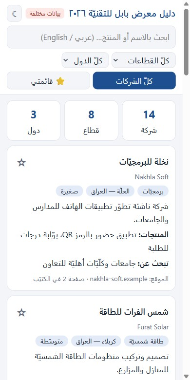
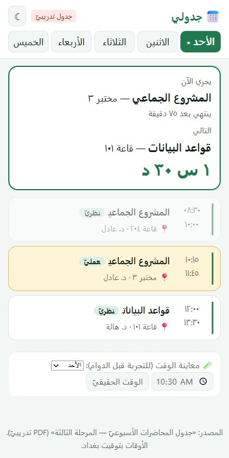

تفتتح هذه المحاضرة المقرر بالأساس الذي يقوم عليه كل ما يليه من أسابيع: كيف يتشكّل الفريق، وكيف تُوزَّع الأدوار بين أعضائه، وكيف يُتّفق على قواعد العمل المشتركة قبل كتابة أول سطر من المشروع. وتُبنى المادة على مصادر منشورة، تُسرد أرقامها في خاتمة المحاضرة.
يُراد بمشروع المجموعة عملٌ تعليمي ينجزه فريق صغير ليُسلّم مخرجًا مشتركًا واحدًا ضمن مدة الفصل. وتُظهر مراجعة منهجية لمقررات المشاريع الختامية في هندسة البرمجيات أنّ هذه المقررات تُدار في الغالب بوصفها مشاريع جماعية[١]، وأنّ نحو ٥٨٪ من الدراسات المراجَعة أفادت بوجود عملاء من خارج المقرر، وأنّ المشاريع قامت على احتياجات حقيقية لأطراف خارجية في ٦٢٪ من المقررات[١].
غير أنّ القيمة التعليمية لا تقف عند الجانب التقني؛ فالمشاريع الجماعية تنمّي حلّ المشكلات والتعاون والتواصل[٢]. وفي المقابل يبرز فيها تحدٍّ متكرر، هو أن يبذل بعض الأعضاء جهدًا أقل مما كانوا سيبذلونه منفردين[٢]، وهو ما يعود إليه المحور السابع بالتفصيل.
ولمّا كان العمل الجماعي يجري داخل مشروع له بداية ونهاية، يلزم أولًا تحديد موضع الأسبوع الأول من مسار المشروع كله. يصف معهد إدارة المشاريع (PMI) دورة الحياة بخمس مجموعات عمليات: البدء، والتخطيط، والتنفيذ، والمراقبة والضبط، والإغلاق[٣][٤].
وهذا التسلسل الخطي يصدق على دورات الحياة التنبؤية؛ أما في الأساليب التكرارية والرشيقة فتتكرر عمليات التخطيط والتنفيذ والمراقبة داخل كل دورة، ويبقى البدء والإغلاق على مستوى المشروع بأكمله[٣]. ومن ثمّ فإنّ ما يُنجَز في الأسبوع الأول يظل مرجعًا للفريق طوال الفصل.
يتناول هذا المحور سؤالين متصلين: كيف ينضج الفريق مع الوقت، وما الحجم والتركيب اللذان يهيّئان له فرصة أفضل.
أولًا، مراحل نمو الفريق. اقترح عالم النفس Bruce Tuckman عام ١٩٦٥ نموذجًا من أربع مراحل لتطور المجموعات الصغيرة، ثم أضاف مع Mary Ann Jensen عام ١٩٧٧ مرحلة خامسة هي الإنهاء[٦]. وتُعرض المراحل عادةً على هيئة سلّم:
ولا يبلغ كل فريق مرحلة الأداء[٨]. ثم إنّ الفريق الذي بلغها لا يضمن البقاء فيها؛ فانضمام عضو جديد، أو تكرر غياب بعض الأعضاء عن الاجتماعات، قد يعيد الفريق إلى مرحلة الاصطدام[٨]. وتؤكد مصادر أخرى أنّ دخول أعضاء جدد أو خروج آخرين يستدعي دورة جديدة من التكوين والاصطدام والاستقرار[٧].
ثانيًا، الحجم والتركيب. تتفاوت أحجام الفرق في مقررات المشاريع الختامية تفاوتًا كبيرًا، من طالب واحد إلى خمسة وثلاثين في فريق واحد، غير أنّ عدة دراسات خلصت إلى أنّ الحجم الأمثل يتراوح بين أربعة وستة طلاب[١]. والعلة أنّ فريقًا من اثنين أو ثلاثة لا يواجه مشكلة تواصل تُذكر، لكنه كثيرًا ما يعجز عن إنجاز مشروع كبير[١]. ويتوافق ذلك مع القاعدة التقريبية التي تقترح أربعة إلى ستة أعضاء لفرق المشاريع الطلابية[١٠]، ومع بيانات صناعية عن مشاريع البرمجيات رجّحت أن يكون الحجم الأمثل بين ثلاثة وسبعة أشخاص[١١].
وللحجم الزائد ثمن واضح: فقد وصف أحد مساعدي التدريس في مقرر كبير متعدد الفرق مشهدًا فيه «ركّاب» أكثر من «سائقين»، أي أعضاء متفرجون، واستنتج الباحثون أنّ نطاق المشروع ينبغي ألا يكون قابلًا للإنجاز دون إسهام كل عضو[١٢]. أما التنوع داخل الفريق فيرفع الإنتاجية لكنه يطيل زمن إنجاز العمل[١٠].
وأخيرًا تتعدد طرق تكوين الفرق: التوزيع العشوائي، أو الاختيار الذاتي، أو الاستعانة ببيانات يملؤها الطلبة وأدوات تحسين مثل gruepr[١٣]. وفي دراسة على مشاريع جماعية في تقنية المعلومات لدى طلبة سريلانكيين لم يؤيّد الطلبة كثيرًا تكوين الفرق بالاختيار الذاتي، مع تنبيه الباحثين إلى أنّ ذلك قد يختلف باختلاف الثقافة[٢]؛ ولذلك يظل الحكم مرتبطًا بسياق كل مقرر.
متى استقرّ حجم الفريق وتركيبه، انتقل السؤال إلى من يتولى ماذا. وتُقارَب الأدوار في الأدبيات من زاويتين متكاملتين: زاوية السلوك التي تصف كيف يميل كل شخص إلى الإسهام، وزاوية المسؤولية الوظيفية التي تصف ما يُساءَل عنه كل عضو في إطار عمل محدد.
الزاوية الأولى: أدوار بيلبن. طوّر Meredith Belbin أدواره التسعة عام ١٩٨١ بعد تسع سنوات من الدراسة[١٤]. ويُعرَّف الدور هنا بأنه نمط ميل في السلوك والإسهام والتفاعل مع الآخرين[١٤]، وتتوزع الأدوار على ثلاثة عناقيد: عملية، واجتماعية، وفكرية[١٤].
جدول ١ · أدوار بيلبن التسعة: الإسهام والضعف المقبول[١٥][١٦]
| الدور | الإسهام | الضعف المقبول |
|---|---|---|
| Shaper | طاقة عالية تدفع الآخرين إلى التقدم. | قد يفتقر إلى الحساسية. |
| Implementer | منظَّم يحوّل الأفكار إلى عمل عملي. | بطيء أمام الفرص الجديدة وقليل المرونة. |
| Completer Finisher | دقيق يبحث عن الأخطاء ويصقل المخرج حتى يكتمل. | يقلق أكثر من اللازم ويتردد في التفويض. |
| Co-ordinator | قائد محترم يساعد الجميع على التركيز في مهامهم. | قد يُرى متحكّمًا أكثر من اللازم. |
| Teamworker | متعاون ودبلوماسي، يُصغي ويخفف الاحتكاك. | متردد في القرارات الحاسمة ويتجنب المواجهة. |
| Resource Investigator | متحمس يستكشف الفرص ويبني العلاقات. | مفرط في التفاؤل ويفقد اهتمامه بعد الحماس الأول. |
| Plant | يقدّم أفكارًا أصيلة لمشكلات صعبة. | ضعيف التواصل وقد يهمل التفاصيل. |
| Monitor Evaluator | يرى الخيارات كلها ويحكم عليها بدقة. | يفتقر إلى الحماس والقدرة على الإلهام، وقد يبالغ في النقد. |
| Specialist | يمتلك معرفة عميقة في مجال محدد ويحلّ فيه مشكلات كثيرة. | قليل الاهتمام بما يقع خارج تخصصه. |
ويستفاد من النموذج على وجه الخصوص في ثلاث نقاط. فالفريق المثالي يضم توازنًا صحيًّا بين الأدوار التسعة، لكنّ هذا نادر في الواقع، ويفيد الفريق أن يعرف أي الأدوار زائد التمثيل وأيها غائب[١٤]. والأدوار ليست قدَرًا ثابتًا، فهي تنضج وقد تتغير مع الخبرة والانتباه الواعي[١٤]. وفي المجموعات الأصغر من ثمانية أشخاص يضطر بعض الأعضاء إلى أداء أكثر من دور، فيتنقلون بينها بحسب حاجة الفريق والمهمة[١٧]. ولذلك فإنّ مقارنة التسعة بفريق من أربعة إلى ستة أعضاء لا تعني البحث عن تسعة أشخاص، بل عن تغطية الأدوار المهمة للمهمة الحالية.
الزاوية الثانية: مسؤوليات سكرم. تنتقل المقاربة هنا من الميل السلوكي إلى ما يُسأل عنه كل عضو. فقد استبدل دليل سكرم في إصدار ٢٠٢٠ مصطلح «الأدوار» بمصطلح «المسؤوليات»، تأكيدًا على عقلية الملكية والنتائج[١٨]. ويتألف فريق سكرم من مسؤول واحد عن المنتج، ومسؤول واحد عن سكرم، ومطوّرين[١٩].
جدول ٢ · المسؤوليات الثلاث في سكرم[١٨][١٩]
| المسؤولية | عمّا يُساءَل؟ |
|---|---|
| Product Owner | تعظيم قيمة المنتج الناتج عن عمل الفريق. |
| Developers | إنشاء المنتج؛ وتشمل الكلمة كل من يتولى تطوير إضافة ذات قيمة، لا مبرمجي البرمجيات وحدهم. |
| Scrum Master | فاعلية فريق سكرم وإرساء سكرم كما يصفه الدليل. |
ولا يمنع الإطار أن يجمع شخص واحد أكثر من مسؤولية، غير أنّ المهارات اللازمة لذلك يصعب أن تجتمع في شخص واحد[١٨]؛ وهذه ملاحظة تهمّ فرق المقرر الصغيرة التي لا تستطيع تخصيص شخص لكل مسؤولية.
وللتمثيل على صورة عملية، يعرض نموذج فريق طلابي في دليل منشور خمسة أعضاء بأدوار مثل المنسق الذي يرتب الاجتماعات، ومدير المشروع والمحرر الذي يتابع انشغال كل عضو بمهمته، ومدير الموارد الذي يدوّن محاضر الاجتماعات، والمسؤول التقني الذي يختبر ويوفر المصادر[٢٠]. وهذه أمثلة توضيحية لا نموذج ملزم؛ فالفريق يصوغ أدواره من احتياجات مشروعه.
وبعد أن تتحدد الأدوار يبقى أن تُدوَّن قواعد العمل المشتركة، وهذا ما يؤديه ميثاق الفريق. وهو وثيقة موجَّهة إلى الداخل، تختلف عن وثيقة نطاق العمل الموجَّهة إلى الخارج، ولا ينبغي أن تكرر ما فيها؛ كما أنه يعين الفريق على عبور مراحل التكوين والاصطدام والاستقرار[٩].
وتتفق نماذج المواثيق في الجامعات على عناصر متقاربة. فالنموذج المتداول المقتبس من مركز إيبرلي بجامعة كارنيغي ميلون يقوم على أربعة أسئلة: الأهداف، والتوقعات، والسياسات والإجراءات، والعواقب، ثم يوقّع الأعضاء جميعًا[٢١]. أما إرشادات مقرر مشاريع في الجامعة الوطنية الأسترالية فتضيف أن يُحدَّد هدف للفريق يختلف عن هدف المشروع، وأن تُوثَّق السلوكيات المقبولة وقواعد التواصل ومواعيد الاجتماعات وأماكنها[٩]. وتطلب بعض المقررات كذلك أهدافًا شخصية لكل عضو ومستوى التزامه، وآلية لاتخاذ القرار عند الاختلاف، وشروطًا للفصل عند تكرار الإخلال[٢٢]. ومن المحاور التي يُقترح أن تتناولها قواعد الفريق: الحضور والالتزام بالمواعيد والمساهمة واتخاذ القرار وإدارة الخلاف وتوزيع المهام[١٠].
جدول ٣ · عناصر ميثاق الفريق ومصادرها
| العنصر | ما يتضمنه | المصدر |
|---|---|---|
| الأهداف | ما يريده الفريق من المشروع، مع التمييز بين هدف الفريق وهدف المشروع. | [٢١][٩] |
| التوقعات | الحضور، والمشاركة، وتواتر التواصل، وجودة العمل. | [٢١] |
| السياسات والإجراءات | مواعيد الاجتماعات وقنواتها، وآلية اتخاذ القرار. | [٢١][٩][٢٢] |
| العواقب | كيفية التعامل مع التقصير، وشروط الفصل إن وُجدت. | [٢١][٢٢] |
| التوقيع والمراجعة | يوقّعه جميع الأعضاء، ويُراجَع ويُعدَّل باتفاق الفريق كله. | [٩] |
ولكي تنعكس الأدوار والقواعد على العمل اليومي، يحتاج الفريق إلى أدوات تجعل المسؤوليات مرئية. وفي مشاريع البرمجيات يتصدر GitHub هذه الأدوات، ويُعرَّف سير العمل فيه بأنه خفيف يقوم على الفروع[٢٣]. وفي هذا السير تُستعمل طلبات الدمج لطلب الملاحظات على التغييرات، وقد تشترط بعض المستودعات مراجعة معتمدة قبل الدمج[٢٣]. وإذا عالج طلب الدمج مسألة مسجَّلة جاز ربطه بها، فتُغلق المسألة تلقائيًا عند الدمج إن استُعملت كلمة ربط مخصصة[٢٣].
ويتصل بذلك اصطلاح كتابة رسائل الإيداع، ومنه بادئات مثل feat وfix وdocs؛ ويشدد الدليل المنشور على أنّ اتباع اصطلاح الفريق أهم من التفضيل الشخصي[٢٤].
ومهما أُحسن تكوين الفريق وتوزيع أدواره، يظل أخطر ما يهدده أن يبذل بعض أعضائه جهدًا أقل مما يبذلونه منفردين. ويسمى هذا التكاسل الاجتماعي؛ فإذا بلغ حدّ أن ينال العضو الدرجة عن عمل غيره وهو لا يعمل شيئًا يُذكر سُمّي الركوب المجاني[٢٥]. وللتكاسل أثر مزدوج، إذ يُضعف دافعية الأعضاء المجتهدين ويفجّر الخلافات ويُنزل بأداء المجموعة[٢].
وقد استعرضت دراسة منشورة عام ١٩٩٠ في تعليم التسويق أسباب الركوب المجاني وقدّمت خمس عشرة توصية للحد منه، ورصدت آراء الطلبة في فاعلية ستة أساليب، هي: تماسك المجموعة، وحجمها، وإمكان الفصل أو الانسحاب، ومناقشة المدرّس للمشكلة، وتقييم الزملاء بعضهم بعضًا[٢٦]. ومن الاقتراحات الواردة في ورقة بحثية أخرى أن تبدأ المشاريع بجلسة تأمل فردي حول العمل الجماعي، والغرض منها ليس كشف المتكاسلين بقدر اكتشاف تقسيم العمل غير العادل مبكرًا[٢٧]. أما دراسة سريلانكا فوجدت أنّ أغلب الآليات المقترحة إيجابية وناجحة في الحد من المشكلة[٢].
الحلول والتعليل في تبويب «الحلول والتعليل» 🔑
أولًا · الاختيار من متعدد
ثانيًا · صح أم خطأ
ثالثًا · أسئلة قصيرة
رابعًا · الواجب
يحدد كل عضو في الفريق دورين مفضّلين من أدوار بيلبن التسعة وضعفًا مقبولًا واحدًا لأحدهما، ثم تُجمَع إجابات الأعضاء في جدول واحد يبيّن الأدوار المغطاة والأدوار شحيحة التمثيل.
شروط تُفحَص: تُعدّ المهمة ناقصة إذا خلت من دور واحد على الأقل ضعيف التمثيل في الفريق، ومن اقتراح عملي لتغطيته. وإذا تطابقت تفضيلات الأعضاء تمامًا، يُذكر ذلك صراحة مع التفسير؛ فالنتيجة السلبية نتيجة.
يُعدّ كل فريق ميثاقًا مختصرًا يتضمن العناصر الخمسة الواردة في الجدول ٣: الأهداف، والتوقعات، والسياسات والإجراءات، والعواقب، والتوقيع والمراجعة.
شروط تُفحَص: هدف واحد على الأقل يخص الفريق ويختلف عن هدف المشروع؛ وموعد اجتماع أسبوعي وقناة تواصل محددان؛ وآلية مكتوبة لاتخاذ القرار عند الخلاف؛ وفقرة تبيّن كيف يُعدَّل الميثاق.
رُتّبت المصادر بحسب أول ورود في المحاضرة. جُمعت المادة عبر الإنترنت وصيغت بأسلوب موحَّد؛ ولم يُنقل نص حرفي من أي مصدر. وقد عُرضت مراحل تاكمان وأدوار بيلبن نقلًا عن صفحات تعليمية ومراجع ثانوية استندت إلى الأعمال الأصلية، ويحسن الرجوع إلى الأصول عند الاستشهاد الأكاديمي.
في الأسبوع الأوّل شكّلنا الفريق ووزّعنا الأدوار. وفي هذا الأسبوع نتعرّف على كلود: مساعدُ ذكاءٍ اصطناعيّ يساعد الفريق في التفكير والتخطيط والكتابة والمراجعة — بشرط أن نعرف كيف نسأله، وأين نتحقّق من جوابه.
كلود نموذجٌ لغويّ كبير (LLM) من شركة Anthropic. تكتب له سؤالك أو طلبك بالعربيّة أو الإنجليزيّة، فيكتب لك جوابًا. هو لا «يفكّر» كالإنسان، بل يتوقّع الكلمة التالية بناءً على أنماطٍ تعلّمها من نصوصٍ هائلة.
تفتحه من المتصفّح على claude.ai، أو من تطبيق الهاتف، أو تطبيق الحاسوب — وفيه خطّةٌ مجانيّة تكفي للبداية.
| مرحلة المشروع | كيف يساعد كلود |
|---|---|
| اختيار الفكرة | يقترح أفكارًا لمشكلةٍ حقيقيّة، ويقارن بينها من حيث الصعوبة والوقت. |
| التخطيط | يقسّم المشروع إلى مهامّ، ويقترح جدولًا زمنيًّا على أسابيع الفصل. |
| توزيع العمل | يقترح توزيع المهامّ على الأدوار التي حدّدتموها في الأسبوع الأوّل. |
| الفهم والتعلّم | يشرح مفهومًا صعبًا بأمثلة بسيطة، ويجيب عن «لماذا؟». |
| الكتابة والمراجعة | يراجع تقريركم: الوضوح، والترتيب، والأخطاء اللغويّة — وأنتم تكتبون. |
| البرمجة | يشرح خطأً في الكود ويقترح حلًّا، فتفهمونه ثمّ تطبّقونه. |
| الاجتماعات | يلخّص ملاحظات الاجتماع إلى قراراتٍ ومهامّ ومسؤولين. |
ولا تكتفوا بأوّل جواب: اطلبوا تعديلًا («اجعل الجدول على ١٠ أسابيع»، «أضِف عمودًا للحالة») — المحادثة تتحسّن خطوةً بعد خطوة.
ميزة المشاريع (Projects) تحفظ معلوماتٍ ثابتة عن مشروعكم — وصف الفكرة، والأدوار، والجدول، وملفّات المراجع — فلا تعيدون شرحها في كلّ محادثة. كلّ محادثةٍ جديدة داخل المشروع تبدأ وهي «تعرف» مشروعكم.
الحلول والتعليل في تبويب «الحلول والتعليل» 🔑
أولًا · الاختيار من متعدد
ثانيًا · صح أم خطأ
ثالثًا · سؤالٌ قصير
في الأسبوع الثاني تعلّمنا القواعد الأربع لطلبٍ جيّد من كلود: السياق، والمهمّة، والشكل، والمثال. وفي هذا الأسبوع نرى ما يحدث حين نطبّقها على طلبٍ أكبر: نعطي كلود ملفّ PDF، فيبني لنا تطبيقًا يعمل في المتصفّح ثمّ على الهاتف. هذه المحاضرة مدخلٌ إلى كتابة الأوامر: سأطبّق أمامكم مثالين كاملين، من الملفّ إلى أيقونة على الهاتف، باستعمال ملفّات تدريبيّة آمنة لا بيانات حقيقيّة.
| المصطلح | المعنى | مثال |
|---|---|---|
| الأمر (Prompt) | النصّ الذي تكتبه لكلود لتطلب منه شيئًا | «لخّص هذا الملفّ في خمس نقاط» |
| أمر البناء | أمرٌ يطلب منتجًا (صفحة، تطبيق، جدول) لا جوابًا | «ابنِ صفحة تبحث في أسماء الشركات» |
| HTML | لغة صفحات الويب؛ ملفّ واحد يفتحه أيّ متصفّح | index.html |
| الأداة الجانبيّة (Artifact) | نافذة في كلود يظهر فيها التطبيق الذي بناه ويعمل مباشرة | دليل الشركات يظهر بجانب المحادثة وتجرّبه فورًا |
| المصدر أو المرفق | الملفّ الذي تعطيه لكلود ليبني منه | كتيّب PDF تدريبيّ من ١٥ صفحة |
| المستخدم المستهدف | من سيستعمل التطبيق، وأين، وعلى أيّ جهاز | طالب يفتح جدوله على هاتفه صباحًا |
| الوظيفة (Feature) | شيء محدّد يفعله التطبيق | بحث، تصفية، حفظ في «قائمتي» |
| القيد (Constraint) | شرطٌ يجب ألّا يخالفه التطبيق | «بالعربيّة من اليمين»، «لا تخترع بيانات» |
| التكرار (Iteration) | جولة تعديل بعد رؤية النتيجة | «كبّر الخطّ على الهاتف» |
| الهلوسة (Hallucination) | أن يكتب كلود معلومةً غير موجودة في المصدر بثقة | قاعة لمحاضرة لم ترد في الجدول |
| البيانات الشخصيّة | معلومات تدلّ على شخص بعينه | اسم موظّف ورقم هاتفه وبريده |
| التصميم المتجاوب (Responsive) | صفحة تتكيّف مع الهاتف والحاسوب | البطاقات تصير عمودًا واحدًا على الهاتف |
| الوضع الليليّ (Dark mode) | ألوان داكنة مريحة للعين | زرّ ☀/☾ في أعلى الصفحة |
| التخزين المحلّيّ (localStorage) | ذاكرة صغيرة في متصفّح المستخدم نفسه | الشركات التي ميّزتها بنجمة تبقى بعد إغلاق الصفحة |
| ملفّ ثابت للقراءة والطباعة؛ لا بحث ذكيّ فيه ولا تصفية | جدول المحاضرات الذي يصلكم في الواتساب | |
| البيانات التدريبيّة (المختلَقة) | بيانات وهميّة بشكل الحقيقيّة، نتدرّب عليها بأمان | كتيّب «معرض بابل للتقنيّة» التدريبيّ |
| الرابط العامّ (Publish) | زرّ في كلود يعطي الصفحة رابطًا يفتحه أيّ أحد | رابط ترسله لزملائك في الواتساب |
| الإضافة إلى الشاشة الرئيسيّة | وضع أيقونة لصفحة الويب على الهاتف لتُفتح كالتطبيق | ⋮ ← «إضافة إلى الشاشة الرئيسيّة» |
| النشر | وضع الصفحة على رابط يفتحه الآخرون | رفعها إلى GitHub Pages |
حتّى الآن كنّا نسأل كلود فيجيب بنصّ. لكنّه يستطيع أكثر: إن أعطيته ملفّ PDF وطلبت منتجًا، يكتب صفحة HTML كاملة تعمل في المتصفّح، وتظهر لك في نافذة جانبيّة (Artifact) لتجرّبها فورًا. ثمّ تفتحها على هاتفك وتضعها على الشاشة الرئيسيّة كأيّ تطبيق.
ستّ محطّات، وسنمشيها اليوم مرّتين أمامكم:
القواعد الأربع من الأسبوع الماضي ما زالت الأساس. أمر البناء يفصّلها إلى ستّة أجزاء:
المشكلة: «معرض بابل للتقنيّة» وزّع كتيّبًا PDF عن ١٤ شركة، لكلّ شركة صفحة. البحث فيه على الهاتف متعب: تمرير طويل، ولا تصفية، ولا مكان لملاحظاتك. (الكتيّب تدريبيّ والبيانات مختلقة.)
أرفقتُ كتيّب الشركات المشاركة في «معرض بابل للتقنيّة» (١٥ صفحة، لكلّ شركة صفحة). المستخدم: زائر للمعرض، يحمل هاتفه ويتنقّل بين الأجنحة. ابنِ صفحة HTML واحدة: دليلًا ذكيًّا للشركات. الوظائف: ١) بحث بالعربيّة والإنجليزيّة يتحمّل الأخطاء الإملائيّة. ٢) تصفية بالقطاع والدولة. ٣) بطاقة لكلّ شركة: النبذة، والمنتجات، وما تبحث عنه. ٤) «قائمتي» بنجمة مع ملاحظة. ٥) أرقام سريعة: عدد الشركات والقطاعات والدول. القيود: بالعربيّة من اليمين، تعمل على الهاتف، ملفّ واحد، ولا تكتب أيّ معلومة غير موجودة في الكتيّب. الشكل: هادئ مع وضع ليليّ، واذكر رقم الصفحة في الكتيّب لكلّ شركة.

جرّب النتيجة على هاتفك: 📱 دليل المعرض.
جولة التحسين الثانية — الخصوصيّة: في الكتيّب اسم «مسؤول التواصل» وهاتفه. قبل النشر طلبنا: «احذف أسماء الأشخاص وهواتفهم من كلّ البطاقات، واترك موقع الشركة فقط». هذا الطلب لم يأتِ من كلود، بل من قرارنا نحن.
المشكلة: جدول المحاضرات يصلكم صورةً أو PDF في مجموعة الواتساب. وكلّ صباح تفتحونه وتكبّرونه لتعرفوا: ما محاضرتي الآن؟ وما التالية؟ وفي أيّ قاعة؟
أرفقتُ جدول المحاضرات الأسبوعيّ للمرحلة الثالثة (PDF، صفحة واحدة). المستخدم: طالب يفتح الصفحة على هاتفه صباحًا وبين المحاضرات. ابنِ صفحة HTML واحدة: تطبيق «جدولي». الوظائف: ١) بطاقة في الأعلى: «يجري الآن» و«التالي» بحسب الساعة الحقيقيّة بتوقيت بغداد، مع عدّاد تنازليّ. ٢) تبويب لكلّ يوم، ويُفتح اليوم الحاليّ تلقائيًّا. ٣) لكلّ محاضرة: الوقت، والمادّة، ونظريّ أو عمليّ، والقاعة، والمدرّس. ٤) المحاضرات المنتهية باهتة، والحاليّة مميّزة بلون. القيود: الأوقات والقاعات كما في الجدول حرفيًّا، بالعربيّة من اليمين، تعمل على الهاتف، ولا تحتاج إنترنت بعد فتحها. وأضِف في الأسفل حقل «معاينة الوقت» (يوم وساعة) لأجرّب الصفحة قبل الدوام.

جرّب النتيجة: 📱 جدولي. في الأسفل اختر «الأحد» والساعة ١٠:٣٠، وشاهد «يجري الآن» يتغيّر.
الصفحة الآن تعمل داخل كلود. لتصير تطبيقًا على هاتفك:
أوّل نتيجة نادرًا ما تكون الأخيرة. التحسين يكون بطلبات قصيرة ومحدّدة، طلبًا واحدًا في كلّ مرّة:
| طلب تحسين ضعيف | طلب تحسين جيّد |
|---|---|
| «خلّيها أحلى» | «كبّر الخطّ إلى ١٨ على الهاتف، واجعل البطاقات عمودًا واحدًا» |
| «فيها غلط» | «محاضرة الأربعاء الأولى في قاعة ٣٠١ لا ١٠١؛ صحّحها» |
| «ضيف كلّ شيء» | «أضِف تصفية بحجم الشركة: صغيرة، متوسّطة، كبيرة» |
وقبل أن تشارك التطبيق، افحص أربعة أشياء:
اضغط على كلّ عبارة في هذا الأمر ستسبّب مشكلة. يوجد ٦ عبارات.
من ملفّ PDF إلى أيقونة على هاتفك: اضغط البطاقات بالترتيب الصحيح.
اضغط القطع المناسبة بالترتيب لتصنع أمر بناءٍ كاملًا، ثمّ «تحقّق». جولتان.
الحلول والتعليل في تبويب «الحلول والتعليل» 🔑
أولًا · الاختيار من متعدد
ثانيًا · صح أم خطأ
ثالثًا · أسئلة قصيرة
رابعًا · سيناريو
نهاية محاضرة الأسبوع الثالث · إعداد: د. أمير هادي ★
تنزل لاحقاً
محتوى هذا الأسبوع سيُضاف قريباً.
تنزل لاحقاً
محتوى هذا الأسبوع سيُضاف قريباً.
تنزل لاحقاً
محتوى هذا الأسبوع سيُضاف قريباً.
تنزل لاحقاً
محتوى هذا الأسبوع سيُضاف قريباً.
تنزل لاحقاً
محتوى هذا الأسبوع سيُضاف قريباً.
تنزل لاحقاً
محتوى هذا الأسبوع سيُضاف قريباً.
تنزل لاحقاً
محتوى هذا الأسبوع سيُضاف قريباً.
تنزل لاحقاً
محتوى هذا الأسبوع سيُضاف قريباً.
تنزل لاحقاً
محتوى هذا الأسبوع سيُضاف قريباً.
تنزل لاحقاً
محتوى هذا الأسبوع سيُضاف قريباً.
تنزل لاحقاً
محتوى هذا الأسبوع سيُضاف قريباً.
تنزل لاحقاً
محتوى هذا الأسبوع سيُضاف قريباً.
١. المرحلة التي تتسم بخلافات وتباين في الرأي حول الأهداف:
التعليل: «أ» تصف مرحلة التعارف وتبيّن التوقعات وانتظار توجيه القائد، لا مرحلة الخلاف؛ و«ج» تأتي بعد تجاوز الخلافات حين تتشكل أنماط العمل؛ و«د» مرحلة تتراجع فيها أهمية الأدوار والقواعد. فالخلاف المعتاد على الأهداف سمة الاصطدام.
٢. الدور الذي يقع ضمن العنقود الاجتماعي:
التعليل: «أ» و«د» من العنقود الفكري، و«ج» من العنقود العملي. أما المنسّق فيجمع الأعضاء حول المهام، فهو من الأدوار الاجتماعية إلى جانب الباحث عن الموارد وعامل الفريق.
٣. المسؤول عن تعظيم قيمة المنتج في سكرم ٢٠٢٠:
التعليل: «أ» مسؤولون عن إنشاء المنتج، و«ب» عن فاعلية فريق سكرم، و«د» يتجاهل أن الدليل يحدد ثلاث مسؤوليات متمايزة. فتعظيم القيمة مسؤولية مسؤول المنتج.
٤. حجم فريق المشروع الطلابي:
التعليل: «أ» تُهمل أنّ الفرق الصغيرة جدًّا قد لا تنجز مشاريع كبيرة، و«ج» يناقضه رصد أعضاء متفرجين في فرق كبيرة، و«د» يتجاهل أنّ التواصل يزداد تعقيدًا مع الحجم.
٥. إرشادات ميثاق الفريق:
التعليل: «أ» يخالف الدعوة إلى مراجعته وتعديله، و«ج» يخلط بين ميثاق الفريق الموجَّه إلى الداخل ووثيقة النطاق الموجَّهة إلى الخارج، و«د» يخالف توقيع جميع الأعضاء التزامًا بالعمل الجيد.
١. نموذج تاكمان الأصلي (١٩٦٥) من خمس مراحل.
التعليل: الأصل أربع مراحل: التكوين والاصطدام والاستقرار والأداء؛ وأضيفت مرحلة الإنهاء عام ١٩٧٧ بالاشتراك مع جنسن.
٢. الفريق الذي بلغ الأداء لا يعود إلى مراحل سابقة.
التعليل: قد يعيده انضمام عضو جديد أو تكرر الغياب إلى الاصطدام.
٣. معرفة الأدوار زائدة التمثيل أو الغائبة مفيدة حتى مع غياب التوازن التام.
التعليل: التوازن بين الأدوار التسعة مثالي ونادر، والفائدة العملية في كشف الفجوات.
٤. ربط طلب الدمج بمسألة وإغلاقها تلقائيًا عند الدمج.
التعليل: يتحقق ذلك إذا استُعملت كلمة ربط مخصصة، وتبقى المسألة مرتبطة بطلب الدمج.
١. التكاسل الاجتماعي والركوب المجاني وأسلوبا الحد منهما.
٢. المسؤوليات في سكرم ٢٠٢٠.
١. كيف يُنتج كلود جوابه؟
التعليل: النموذج اللغويّ الكبير يولّد النصّ كلمةً بعد كلمة بحسب الأنماط التي تعلّمها. «أ» خطأ لأنّه لا يفهم فهمًا بشريًّا، و«ج» و«د» لا تصفان طريقة عمله أصلًا.
٢. أفضل طلب:
التعليل: «ج» فيها السياق (فريقٌ من خمسة، نظام حضور) والمهمّة (قسّم إلى مهامّ) والشكل (جدول على ١٢ أسبوعًا). «أ» و«ب» بلا سياقٍ ولا مهمّة، و«د» مهمّةٌ غامضة بلا شكل، فيخمّن كلود ويعطي جوابًا عامًّا.
٣. مصدرٌ لم نجده في أيّ مكتبة:
التعليل: كلود قد يخترع مصادر بثقة (هلوسة)، فلا يُستعمل مصدرٌ لم يُتحقَّق من وجوده. «أ» تنقل الخطأ إلى التقرير، و«ج» تزوير، و«د» مبالغة تُضعف التقرير.
٤. فائدة «المشاريع»:
التعليل: المشروع مساحةٌ تحفظ وصف الفكرة والملفّات فتبدأ كلّ محادثةٍ وهي تعرفها. «ب» و«ج» ليستا من وظائفها، و«د» خطأ لأنّ الهلوسة ممكنةٌ دائمًا وإن قلّت مع وجود مراجع.
١. التحقّق من معلومات كلود ومصادره قبل وضعها في التقرير.
التعليل: لأنّه قد يخطئ بثقة (الهلوسة)، والفريق هو المسؤول عمّا يسلّمه.
٢. وضع أرقام الهواتف والدرجات في المحادثة.
التعليل: هذه معلوماتٌ شخصيّة لا تُوضع في أيّ خدمةٍ خارجيّة، ولا يحتاجها كلود ليساعدكم.
٣. لا حاجة لفهم كودٍ كتبه كلود ما دام يعمل.
التعليل: كلّ عضوٍ يجب أن يشرح ما يسلّمه الفريق في المناقشة، والكود غير المفهوم لا يُصلَح عند أوّل خطأ.
١. طلبٌ لكلود بالقواعد الأربع.
١. ما الفرق بين «السؤال» و«أمر البناء» لكلود؟
التعليل: أمر البناء يطلب أداة تُستعمل مرّات كثيرة. و«أ» غير صحيح: الطول ليس المعيار، و«ج» عكس ما رأيناه (المثالان بُنيا من ملفّات PDF)، و«د» يتجاهل الفرق في الناتج.
٢. أيّ جزء من أجزاء أمر البناء يمنع كلود من اختراع معلومات؟
التعليل: القيد يرسم حدود ما يُسمح به. و«أ» يخصّ المظهر فقط، و«ب» يحدّد لمن نبني لا ماذا نكتب، و«د» يحدّد نوع المنتج لا صحّة محتواه.
٣. في تطبيق «جدولي»، من أين جاءت وظيفة «يجري الآن والتالي»؟
التعليل: الوظيفة الذكيّة جاءت من جزء «المستخدم والمكان». و«ب» غير صحيح: الجدول قائمة أوقات وقاعات فقط، و«ج» لا نعتمد على تخمين كلود، و«د» لا علاقة له.
٤. لماذا حذفنا أسماء مسؤولي التواصل وهواتفهم من دليل المعرض قبل النشر؟
التعليل: الخصوصيّة قرار إنسانيّ قبل النشر. و«أ» ليس السبب، و«ب» غير صحيح: الحذف كان قرارنا، و«ج» لا دليل عليه.
٥. لماذا تدرّبنا على كتيّب «معرض بابل» التدريبيّ لا على كتيّب حقيقيّ؟
التعليل: نتدرّب بأمان على بيانات وهميّة بالشكل نفسه. و«أ» غير صحيح: كلود يقرأ أيّ PDF، و«ج» ليس السبب الأساس، و«د» الشكل لا علاقة له بصدق البيانات.
٦. أيّ طلب تحسين هو الأفضل بعد أوّل نتيجة؟
التعليل: الطلب القصير المحدّد يمكن تنفيذه والتحقّق منه. و«أ» و«ب» غامضان، و«د» يهدم ما نجح بدل تحسين جزء.
٧. قبل أن تشارك تطبيقًا بناه كلود، أيّ فحص هو الأهمّ؟
التعليل: هذه الفحوص تمنع نشر معلومات خاطئة أو شخصيّة أو صفحة لا تعمل. و«ب» و«ج» و«د» لا تمسّ صحّة المحتوى ولا سلامته.
٨. بنى كلود صفحتك ونشرتها برابط. كيف تجعلها أيقونة على هاتف أندرويد؟
التعليل: صفحة الويب تُضاف كأيقونة من المتصفّح مباشرة. و«أ» يخصّ التطبيقات المنشورة في المتجر، و«ب» لا يثبّت شيئًا، و«ج» يعيدنا إلى ملفّ ثابت بلا وظائف.
١. أمر البناء الجيّد يذكر المستخدم ومكان استعماله.
المستخدم والمكان يحدّدان الوظائف المهمّة، مثل العمل على الهاتف أو «الآن والتالي».
٢. إذا لم يجد كلود معلومة في الملفّ، فمن الأفضل أن نطلب منه أن «يكتب شيئًا مناسبًا من عنده».
هذا طلب صريح للهلوسة؛ القيد الصحيح: «لا تكتب أيّ معلومة غير موجودة في الملفّ».
٣. أوّل نتيجة يعطيها كلود هي النتيجة النهائيّة دائمًا.
التحسين يكون بجولات قصيرة ومحدّدة بعد التجربة.
٤. التطبيق الذي بناه كلود يمكن أن يكون ملفّ HTML واحدًا يفتحه أيّ متصفّح.
المثالان كلاهما صفحة HTML واحدة، بلا تثبيت، وتُضاف إلى الشاشة الرئيسيّة.
٥. وضع أرقام هواتف الطلبة ودرجاتهم في صفحة منشورة مقبول ما دام كلود هو من كتبها.
المسؤوليّة على من ينشر، والبيانات الشخصيّة لا تُنشر دون إذن.
٦. الرابط العامّ (Publish) يستطيع فتحه أيّ شخص يصله الرابط.
لذلك لا تُنشر صفحة فيها أسماء أشخاص أو هواتفهم أو درجاتهم.
٧. قائمة الوظائف المرقّمة في الأمر تجعل النتيجة أدقّ.
كلّ وظيفة مكتوبة يبنيها كلود، وما لا يُكتب يُخمَّن.
٨. يكفي أن نجرّب التطبيق على الحاسوب قبل نشره للطلبة.
أغلب المستخدمين على الهاتف، فتُجرَّب الصفحة على الهاتف فعلًا.
١. اذكر الأجزاء الستّة لأمر البناء.
٢. اذكر المحطّات الستّ من ملفّ PDF إلى تطبيق على الهاتف.
٣. اكتب طلب تحسين جيّدًا لصفحة نصّها صغير على الهاتف.
٤. اذكر ثلاثة فحوص قبل مشاركة تطبيق بناه كلود.
أ) لا مصدر واضح ولا مستخدم ولا وظائف ولا قيود؛ و«ضيف كلّ شي» يدفع إلى نشر بيانات شخصيّة، وقد يخترع كلود معلومات.
ب) «أرفقتُ ملفّ Excel لمختبرات الكلّيّة. المستخدم: طالب على هاتفه. ابنِ صفحة HTML واحدة: دليل مختبرات. الوظائف: ١) بحث باسم المختبر أو الجهاز ٢) تصفية بالطابق ٣) «مفتوح الآن» بحسب الساعة ٤) بطاقة لكلّ مختبر. القيود: بالعربيّة، تعمل على الهاتف، ولا تكتب معلومة غير موجودة في الملفّ، ولا تعرض أرقام الهواتف. الشكل: هادئ، وفي الأسفل تاريخ تحديث البيانات.»
ج) أسماء المشرفين وأرقام هواتفهم الشخصيّة؛ لأنّها بيانات شخصيّة لا تُنشر للعامّة دون إذن. يمكن وضع هاتف المكتب الرسميّ بدلها.
د) تحسين: «كبّر الخطّ إلى ١٨ على الهاتف»، «أضِف تصفية بالطابق». فحص: مقارنة ٣ مختبرات بالملفّ الأصليّ، وفتح الصفحة على الهاتف والتأكّد من غياب الهواتف الشخصيّة.